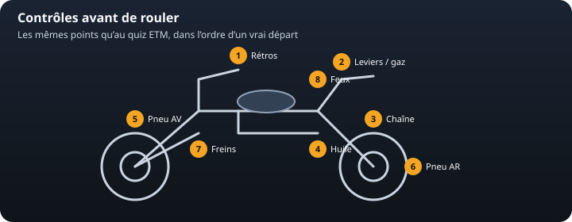
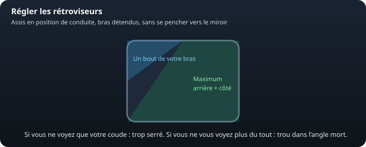
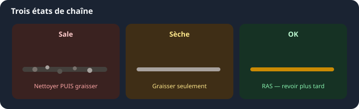
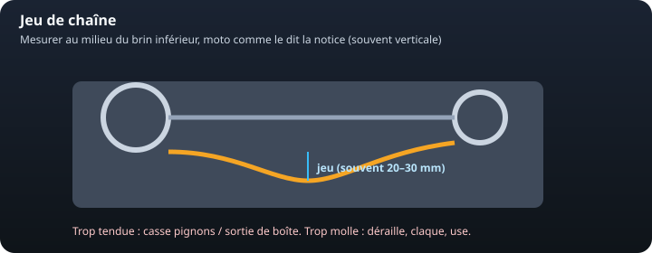
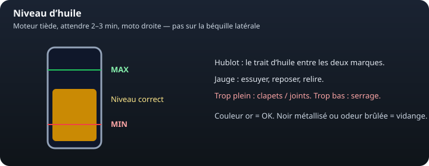

Quand nettoyer
Croûte, sable, boue, sel, après la pluie. Dès que ça gratte sous le doigt (ganté). Intervalle « propre » : souvent plus court l’hiver ou en tout-chemin.
Mécanique · autour de la moto
Les mêmes gestes qu’un vrai départ, et que l’ETM aime poser. Un oubli se paie en crevaison, chaîne qui saute ou frein spongieux — pas en simple mauvaise note.
Rétros · Chaîne · Huile · Pneus · Freins et commandes · Le reste du tour


On règle assis, en tenue de route, sans se pencher vers le verre. Objectif : une fine bande de votre bras ou de l’épaule, et le plus d’arrière / de côté possible.

La règle simple : on ne graisse jamais une chaîne sale. Le grit + la graisse = pâte abrasive. On nettoie d’abord, on graisse ensuite.
Diagnostic
Touchez un état : le geste à faire s’affiche ici.

Geste 1 / 5
Croûte, sable, boue, sel, après la pluie. Dès que ça gratte sous le doigt (ganté). Intervalle « propre » : souvent plus court l’hiver ou en tout-chemin.
Après chaque nettoyage. En usage normal, souvent tous les 500 à 800 km, ou juste après la pluie même si le compteur n’a pas bougé. La notice de votre moto prime.
Milieu du brin du bas, moto comme le dit le manuel (souvent droite). Typique 20–30 mm. On règle sur le point le plus tendu.
Trop tendue : joint spy de sortie de boîte et roulements. Trop molle : claque, saute, peut bloquer la roue. Pignons en crochet : kit complet (chaîne + les deux pignons).
Courroie ou cardan : pas de graisse. Contrôle visuel (fissures, jeu, fuite de soufflet) selon la notice.

Étape 1 / 4
Si liquide : vase d’expansion entre MIN et MAX, moteur froid. Fuite, durite sèche, vapeur : on ne part pas.
Trace d’huile sur un tube, moto qui s’enfonce toute seule : joint ou hydraulique. Ça change le freinage et l’angle.
Démarrage mou, témoin qui reste allumé, cosses oxydées. Un cligno faible se voit aussi de jour.
Guidon, rétros, repose-pieds, silencieux, bagages. Une vis qui « chante » se rattrape à l’arrêt, pas au premier nid-de-poule.
Jauge + habitude de conso. La réserve n’est pas un style de conduite. Robinet sur les anciennes : ON / RES / (parfois PRI).
Gilet HV, gants et casque pour les deux, papiers (permis, carte grise). L’assurance se vérifie via le FVA : plus de vignette depuis avril 2024. Un outil de base et un gonfleur sauvent plus souvent qu’un kit déco.
| Point | Geste | Si ce n’est pas bon |
|---|---|---|
| Rétros | Assis, un bout de bras + l’arrière | Recaler ; angle mort sinon |
| Chaîne | Sale ? sèche ? jeu ? points durs ? | Nettoyer / graisser / régler / kit |
| Huile | Droite, MIN–MAX | Appoint ou vidange — pas sur la latérale |
| Pneus | Pression froide + visuel | On ne part pas |
| Freins / stop | Dur + feu aux deux commandes | On ne part pas |
| Feux / clignos | Tour d’horizon | Ampoule avant la route |
| Béquille / gaz | Coupe-circuit, rappel de poignée | On répare avant de rouler |
En circulation d’examen, ces vérifications se font souvent avant de partir (elles ont quitté le plateau en 2020 au profit de l’ETM). Savoir les faire pour de vrai reste le plus utile.